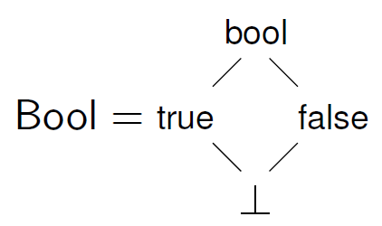
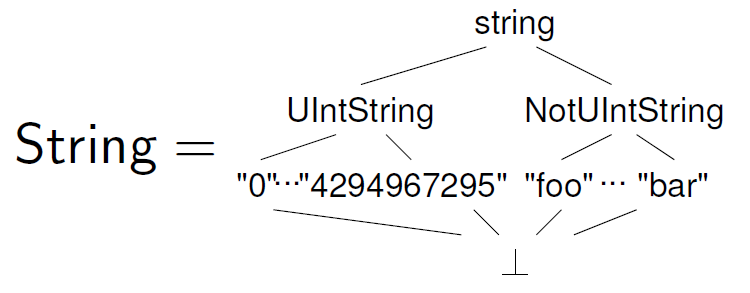
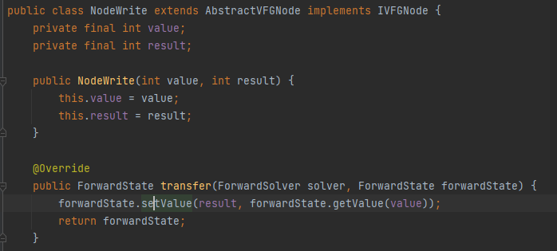

TAJSベースのforward型解析の実装
TAJSでの解析手法(解析のドメイン)に基づきつつ、Ariadne(Python版WALA)上で実装
解析の大まかな手順
- プログラムをTAJSで定義されたノードから構成されるflow graphに変換
- 解析のlatticeの定義
- Iteration algorithm(cf. Dragon book)に基づき、Fix pointに到達させる
プログラムをTAJSで定義されたノードから構成されるflow graphに変換

- Ariadneを使用するメリット
- CFGの作成(Basic blockの切り分け)
- SSA形式への変換
- 定数の展開
解析のlatticeの定義
flow-sensitiveかつcontext-sensitiveな解析を行いたい
- 状態はプログラムポイント(Basic block)とその地点までの実行コンテキストで区別する
- \((\texttt{BasicBlock} \times \texttt{ExectionContext}) \rightarrow \texttt{State}\)
- ex.) \((\mathit{BB0} \times <\mathit{BB1}>) = \{ \mathit{i} = 10, ... \} \)
- ex.) \((\mathit{BB0} \times <\mathit{BB2}>) = \{ \mathit{i} = \texttt{"OK"}, ... \} \)
- Stateは「基本的には」変数からAbstract valueへの対応関係
- \(T \rightarrow {\cal P}(\texttt{Value})\)
- \(\texttt{State} = \texttt{Binding} \times {\cal P}(\texttt{ExectionContext}) \)
- \(\texttt{Binding} = \texttt{Env}*\)
- \(\texttt{Env} = {\cal P}(T \rightarrow {\cal P}(\texttt{Value}))\)
- Abstract valueは、primitive型とobject型のタプルで表す
- \( \texttt{Value} = \texttt{Undef} \times \texttt{Null} \times \texttt{Bool} \times \texttt{Int} \times \texttt{Float} \times \texttt{String} \times {\cal P}(\texttt{Obj}) \)
- タプルの各要素は、具体的な値をできるだけ記録する
- 
- Python(やJS)はリスト等の要素の型が固定ではなく、できるだけelement sensitiveに行いたいため
- ex.) \begin{eqnarray*} (\mathit{BB3} \times < - >) = \{ \mathit{i} & = & (\bot, \bot, \bot, 10, \bot, \bot, \{\}) \\ \mathit{x} & = & (\bot, \bot, \bot, 0, \bot, \texttt{"OK"}, \{\}) \\ \mathit{y} & = & (\bot, \bot, \bot, \top, \bot, \bot, \{\}) \end{eqnarray*}
# BB0
def id(i):
return x
# BB1
id(10)
# BB2
id("OK")
# BB0
i = 10
if i == 5:
# BB1
x = 0
y = 0
else:
# BB2
x = "OK"
y = 1
# BB3
print(x)
Iteration algorithmに基づき、Fix pointに到達させる
- Flow graphのノードごとにTransfer functionを作成し、状態を変化させていく
- ex.) 
- Fix point到達の判定
- (あるコンテキスト中で、)1つのflow graphの全ての状態の変化がなくなったとき
補足
inter-procedural部分の解析方法

loop部分の解析方法
解析のプロセスが粗すぎるので、改善したい